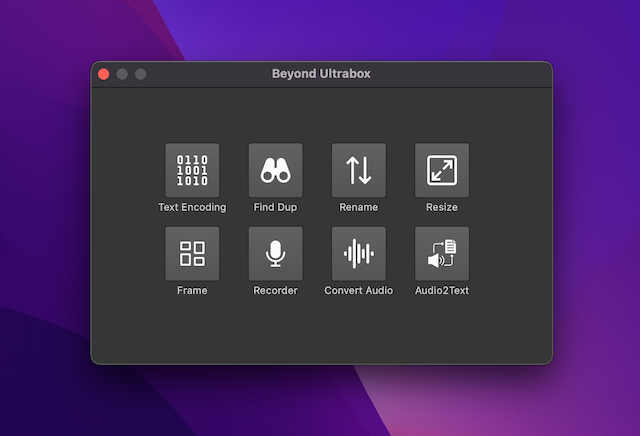

Beyond Ultrabox
The collection of tool applications

The collection of tool applications
Beyond Ultrabox is collection of 8-tool applications.
It can measure and mark length,color or corrdinates efficiently, and save you a lot time.
Text codepage detect and convert tool.
It support convert single file or batch files.
This is a tool for finding duplicate files.
It is simple, fast, and easy to use.
This is a tool for rename any files.
Several formats can combined to rename anything.
This tool let you resize jpeg,png,bmp,webp...
Also it have AI-Upscale to enhance old photos.
Frame photos, make beautiful album.
Have over 100+ styles, 90+ background pattern。
This is an Audio Recorder.
Support record aac / ac3 / mp3 / ogg / wav.
Convert audio to other format.
Support convert video/audio to mp3/m4a/ogg.
This is AI-Tool app convert audio to text
Note: The quality of recognition depends on
the quality of the audio.
